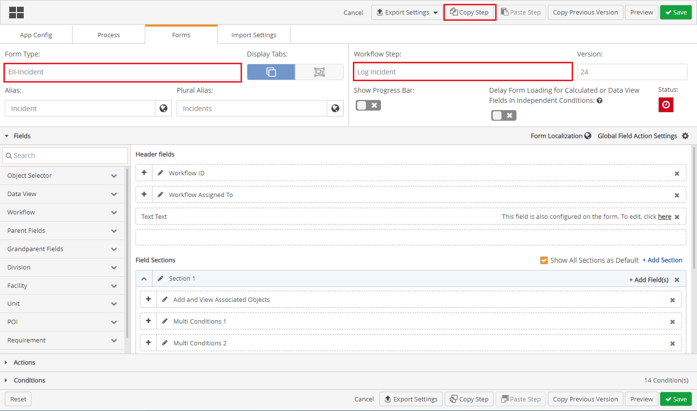
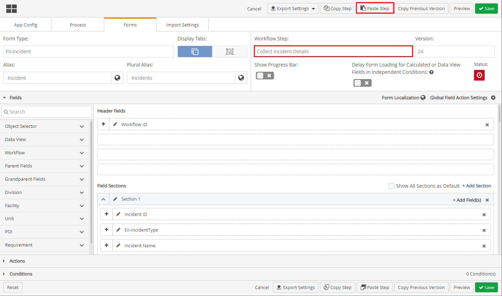

The Copy Step and Paste Step allows users to copy settings from one workflow step to another similarly configured workflow step within a Advanced Workflows (WAB) solution. This allows users to save time from building settings for Fields, Actions and Conditions manually for a workflow step.
The Copy Step and Paste Step functions cannot be used form one solution to another. These functions can only be used within a solution from one workflow step to another Workflow step. The Copy Step and Paste Step functions work best between similarly configured steps in the same solution.
To Copy Settings from one Workflow Step to Another Workflow Step

